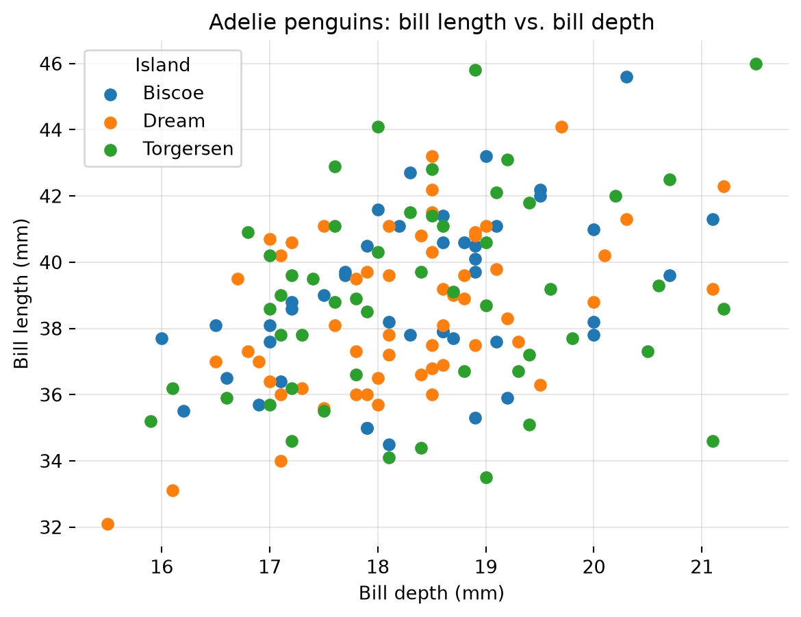
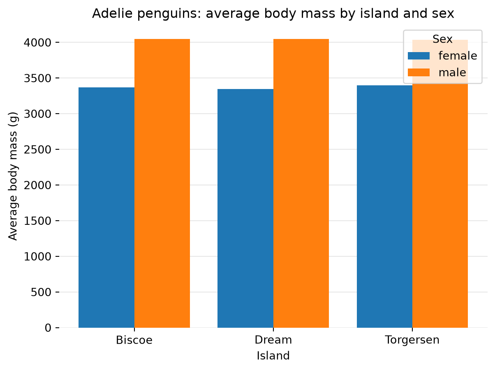

import pandas as pd
import matplotlib.pyplot as plt
import numpy as np
from palmerpenguins import load_penguins
penguins = load_penguins()Palmer Penguins Analysis in Python
The Palmer Penguins data used in this analysis can be found here: https://pypi.org/project/palmerpenguins/
Preview the data
penguins = load_penguins()
penguins.head()| species | island | bill_length_mm | bill_depth_mm | flipper_length_mm | body_mass_g | sex | year | |
|---|---|---|---|---|---|---|---|---|
| 0 | Adelie | Torgersen | 39.1 | 18.7 | 181.0 | 3750.0 | male | 2007 |
| 1 | Adelie | Torgersen | 39.5 | 17.4 | 186.0 | 3800.0 | female | 2007 |
| 2 | Adelie | Torgersen | 40.3 | 18.0 | 195.0 | 3250.0 | female | 2007 |
| 3 | Adelie | Torgersen | NaN | NaN | NaN | NaN | NaN | 2007 |
| 4 | Adelie | Torgersen | 36.7 | 19.3 | 193.0 | 3450.0 | female | 2007 |
Body Mass and Flipper Length by Island
df = penguins
df = df[df['species'] == 'Adelie']
df = df.groupby(by='island').agg(
mean_body_mass=('body_mass_g', 'mean'),
mean_flipper_length=('flipper_length_mm', 'mean'),
).reset_index()
df| island | mean_body_mass | mean_flipper_length | |
|---|---|---|---|
| 0 | Biscoe | 3709.659091 | 188.795455 |
| 1 | Dream | 3688.392857 | 189.732143 |
| 2 | Torgersen | 3706.372549 | 191.196078 |
I filtered the penguins dataset for only penguins of the Adelie species. I then grouped the Adelie penguins by the island they were found and determined the mean body mass (g) and mean flipper length (mm) for each group.
I determined that for the Adelie penguin species, the penguins on the islands of Biscoe and Torgersen have slightly higher mean body mass than those on Dream island. The mean flipper length of the Adelie penguins is almost the same between the 3 islands.
Bill Length and Bill Depth by Island
adelie = penguins[penguins['species'] == 'Adelie']
fig, ax = plt.subplots()
for island, group in adelie.groupby('island'):
ax.scatter(group['bill_depth_mm'], group['bill_length_mm'], label=island)
ax.set_title('Adelie penguins: bill length vs. bill depth')
ax.set_xlabel('Bill depth (mm)')
ax.set_ylabel('Bill length (mm)')
ax.legend(title='Island')
ax.spines[['top', 'right', 'left', 'bottom']].set_visible(False)
ax.grid(alpha=0.3)
ax.set_axisbelow(True)
plt.show()
I created a scatter plot of bill length vs. bill depth for the Adelie species penguins. The points are cloloured based on the island they were found.
From the plot above, it appears as though the bill length and depth is slightly more variable for Adelie penguins on Torgersen compared to the other islands but the difference is small.
Body Mass by Island and Sex
means = (
adelie.dropna(subset=['sex'])
.groupby(['island', 'sex'])['body_mass_g']
.mean()
.unstack('sex')
)
x = np.arange(len(means.index))
n = len(means.columns)
width = 0.8 / n
fig, ax = plt.subplots()
for i, sex in enumerate(means.columns):
offset = (i - (n - 1) / 2) * width
ax.bar(x + offset, means[sex], width, label=sex)
ax.set_xticks(x, means.index)
ax.set_title('Adelie penguins: average body mass by island and sex')
ax.set_xlabel('Island')
ax.set_ylabel('Average body mass (g)')
ax.legend(title='Sex')
ax.spines[['top', 'right', 'left', 'bottom']].set_visible(False)
ax.grid(axis='y', alpha=0.3)
ax.set_axisbelow(True)
plt.show()
In the bar plot above, I plotted the average body mass (g) of Adelie penguins based on their island and sex. For the penguins on all three islands, the males are consistently heavier than the females. The average weights between the males on each island and between the females on each island are quite similar.